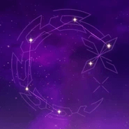

La hábil y confiable subjefa de la Banda de Arataki. Menos mal que esta ella, si no, La Banda de Arataki no tendria nada de "habil" y "confiable".
Artefacto/s recomendados


En% / Vida%

En% / Maestria

Vida% / curacion
Vida% > Maestria > Energia%
Talentos
Pasivas
Constelacion
Armas Recomendadas


Personajes compatibles